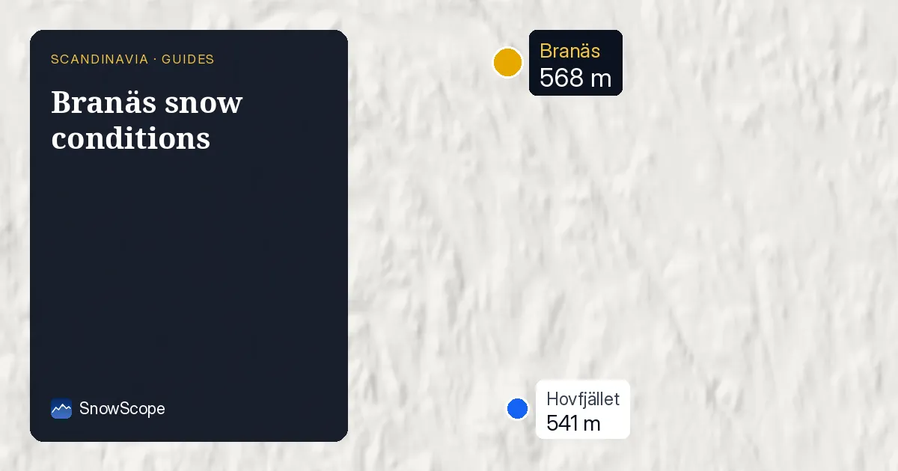

Branäs snow conditions: 27 cm on the hill station, nothing by the river (14 November 2026)
A single week in mid-November shows why Branäs spans two completely different snow worlds. The weather station at Kindsjön, 13 km away at 425 m elevation, recorded 27 cm on 13 November. Letafors at 338 m had 17 cm. Östmark in the river valley at 100 m had nothing at all.
See the live snow forecast for Branäs in the SnowScope appSnow depth, powder alerts and the 3D map, free.

Snow stops at the forest edge
Branäs rises from 150 m beside the Klarälven river to 568 m. The lift network spreads across the whole slope. That vertical range is the story: the base sits lower than Östmark, so it catches no snow when the weather stays mild. The mid-slopes sit at Letafors height and catch some. Only the top forest reaches Kindsjön height, where snow sticks.
Between 10 and 13 November, Kindsjön jumped from 1 cm to 27 cm. Letafors climbed from 11 cm to 17 cm in one day. This was not a heavy snowfall—about 14 cm fell at the top and 4 cm at the base over the whole week—but the contrast shows how fast conditions split when you change height by 300 metres.

Rain moves back uphill
The next seven days will erase that fresh snow at the base. SnowScope forecasts almost no new snow there, while the rain risk is 90 percent. At the top, rain is only a 50 percent risk. The snow line is forecast to settle around 590 m, just above the summit, so any new flakes high up will stick; anything lower will melt or not fall as snow at all.
The fresh snow laid down this week will shrink fast. Thaw will be heaviest on the lower runs and gentlest on the upper forest, so the depth split will widen even more over the next ten days.
Normal for mid-November is much deeper
On 14 November, the 46-winter average shows 5 cm at the top and 1 cm at the base. Branäs today sits well above that at the top but roughly in line at the base. By 15 December the typical figures are 26 cm at the top and 10 cm at the base—double what is here now.
The long record also reveals a trend: snow days at the base have fallen from an average of 132 per winter in the earliest 15 winters to 95 per winter in the latest 15. The base is becoming less reliable. Without snowmaking, the lower runs would stay bare into December most seasons.
A place to avoid this weekend
The base sits at the mercy of a warm valley. Östmark proved it: no snow at 100 m, even after a week that buried the hills. Anyone skiing Branäs this weekend should focus on the upper lifts and upper slopes, where the 27 cm at Kindsjön translates into real cover. The lower runs are thin or bare, and thaw is working now.
If you must ski low, choose early morning before the sun can soften the surface. Afternoon runs will be sticky or wet. The official opening weekend is 11 to 13 December, when December snow climatology and snowmaking should have set up the lower terrain properly.
What the stations tell us
Three weather stations near Branäs show a vertical story in snow depth. Kindsjön at 425 m, 13 km north, sits in the forest at mid-slope height and recorded 27 cm. Letafors at 338 m, 17 km west at a similar height, had 17 cm. Malungsfors at 321 m, 34 km south, measured 21 cm. All three are forest stations, so they represent how Branäs's mid and upper slopes lie.
Östmark at 100 m, 40 km south near the main valley floor, showed 0 cm—the same as the base of Branäs. That tells you the warming and rain line is working. Any snow that fell at the valley floor melted or did not arrive as snow. Branäs base, at 150 m, sits only 50 metres above Östmark, so it caught little to nothing.
Tips for skiers
- Ski the upper slopes this weekend: 27 cm at Kindsjön height translates to real cover on the upper runs. The base is too thin.
- Afternoon skiing below 300 m will be wet and slow as thaw takes hold. Plan morning laps if you want to ski lower.
- Pack layers and waterproof shell. The forecast rain at mid-height will make branches and rocks slick. Do not go off-piste without checking the latest Lavinprognoser bulletin.
- Drive up into the forest above Branäs to see where the snow line actually sits. The difference between the river and the ridge is stark and worth understanding before you book a session.
About these numbers
Resort snow depths are the deepest snow on the resort's upper slopes on the date shown; they are estimates for an area, not a measurement at one point. Forecasts can change. Always read the official avalanche bulletin before going off-piste.
Official avalanche bulletins: Lavinprognoser (Naturvårdsverket)
Cite this report
For research, teaching or the press: the numbers and charts are free to reuse under CC BY 4.0 with this citation.
SnowScope (2026), Branäs snow conditions: 27 cm on the hill station, nothing by the river (14 November 2026), https://snowscope.app/blog/en/2026/11/branas-snow-conditions-14-november-2026.html, accessed 2026-11-14
SnowScope (Atlas Labs). (2026, November 14). Branäs snow conditions: 27 cm on the hill station, nothing by the river (14 November 2026). SnowScope snow reports. https://snowscope.app/blog/en/2026/11/branas-snow-conditions-14-november-2026.html
BibTeX
@misc{snowscope2026branassnowconditions14no,
author = {{SnowScope (Atlas Labs)}},
title = {Branäs snow conditions: 27 cm on the hill station, nothing by the river (14 November 2026)},
year = {2026},
month = nov,
howpublished = {\url{https://snowscope.app/blog/en/2026/11/branas-snow-conditions-14-november-2026.html}},
note = {Published 2026-11-14 20:11 UTC; accessed 2026-11-14}
}· CC BY 4.0 · Methods, data and tools →
Branäs: snow and temperature by height, this winter vs last (tools) →
Follow Branäs
Free: a message when fresh snow is coming, and the forecast every morning.
More snow reports

Stockholm has 0 cm of snow on 13 November. The nearest snow is 75 km away. Here are dog-friendly options in the city and when snow may arrive.

Rovaniemi has 7–8 cm of snow on 13 November, with 5 cm more forecast for the weekend. Thin but steady for the Arctic Circle.

Oulu's first snow cover of winter arrived on 13 November: 7 cm at the city station, above the usual 2 cm for this date. Forecast: 2–3 cm more by Saturday.